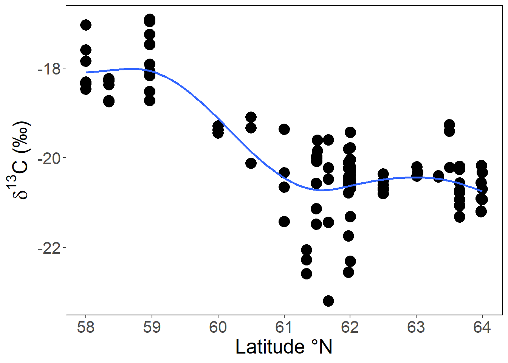
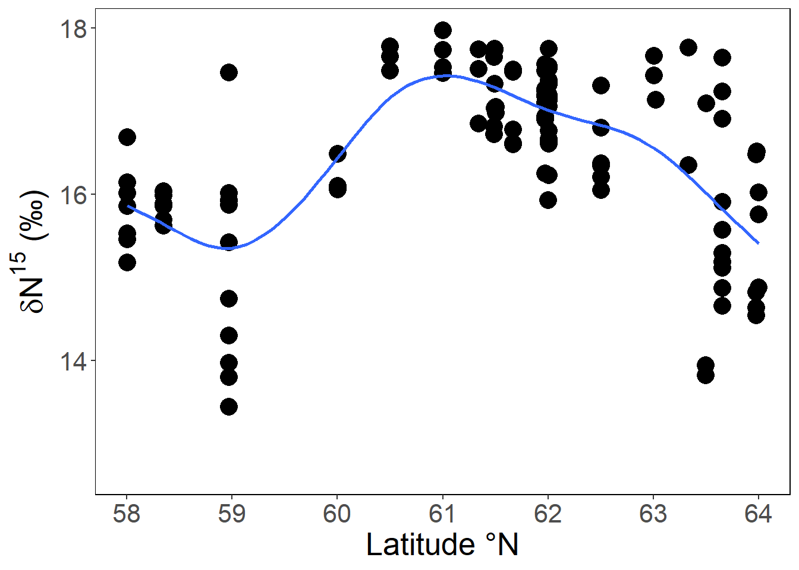

yfs lipids data ABL-RECA
Housekeeping log
Batch #1 2022 yfs trial samples (n = 33) analyzed in ABL for SI and lipids only:
4/11/2023
Whole fish shipped with ice packs in cooler. No otoliths and stomachs were processed from each fish.
12/19/2023
Lab results from trial fish received 2024
More 2022 fish are being selected to do full set of otoliths, stomachs and biochemistry on each fish.
Batch #2 2022 (n = 87) and NW2101 (n = 13) yfs dissected in May-Jul 2024 FEDEX to ABL on Jul 29 2024 5/28/25 Results back on 5/27/25 with bonus Chukchi samples (n = 27) from RECA cruises
change lipidsData_2022_trial.qmd (rename to lipidsData_reca.qmd) and lipidsData.Rmd to use yfs_RECA_biodata.xlsx (MASTER), replacing yfs_2022_lipid-isotopes_d13C lipid adjusted.xlsx::BS22YFS condition-isotope, include all currently available RECA data, qmd/rmd scripts with old names saved in Git version.
Data exploration
Subarea:
South - Bering Sea south of 58.4\(^\circ\)N
Central - Bering Sea between 58.4\(^\circ\)N and 60.4\(^\circ\)N
North - Bering Sea north of 60.4\(^\circ\)N
Arctic - Chukchi Sea
Variables:
Not sure whether the variables were derived from dry or wet sample mass
year - collection year (chr)
stn - EFH station designation (may be different from stationid)
stationid - AFSC bottom-trawl survey designation
haul - haul number (chr)
date - collection date
gear - bottom or beam trawl
len - fish total length (mm)
wt - fish total blotted wet weight (g)
reg - subarea designation
specn - sample id
d15n - δ15N
d13c - δ13C
d13c.adj = δ13C adjusted for lipid content = if_else(cn.ratio > 3.5, d13c - 3.32 + 0.99 * cn.ratio, d13c) Post 2007 Eq.3
c - %C in sample
n - %N in sample
cn.ratio - %C:%N in lipids(??) sample
moist - % moisture in sample
lipids - % lipids in sample
sam.type - sample type: whole fish or muscle tissue plug
sl - standard length (mm)
bd - body depth (mm)
ev.wt - weight minus stomach weight
lip.id - lipids processing id (source specific)
lip.source - Copeman, Miller
lip.sam.wwt - wet weight (wwt) of sample processed for lipids (g)
fa.per.wwt - total fatty acids per wwt (\(\mu\)g/mg)
lip.per.wwt - total lipids per wwt (\(\mu\)g/mg)
subarea | year | n |
|---|---|---|
Arctic | 2017 | 18 |
Arctic | 2018 | 2 |
Arctic | 2019 | 9 |
North | 2021 | 13 |
North | 2022 | 87 |
Central | 2022 | 14 |
South | 2022 | 19 |
Length (mm) | |||||||||||||||
|---|---|---|---|---|---|---|---|---|---|---|---|---|---|---|---|
subarea | (30,40] | (40,50] | (50,60] | (60,70] | (70,80] | (80,90] | (90,100] | (100,110] | (110,120] | (120,130] | (130,140] | (140,150] | (150,160] | (160,170] | (170,180] |
Arctic | 10 | 6 | 0 | 2 | 2 | 0 | 2 | 0 | 2 | 0 | 2 | 1 | 0 | 0 | 2 |
North | 5 | 9 | 10 | 11 | 14 | 11 | 6 | 10 | 11 | 8 | 5 | 0 | 0 | 0 | 0 |
Central | 0 | 0 | 0 | 0 | 1 | 4 | 1 | 2 | 3 | 2 | 0 | 1 | 0 | 0 | 0 |
South | 0 | 0 | 0 | 1 | 1 | 2 | 3 | 4 | 1 | 1 | 5 | 0 | 1 | 0 | 0 |
North slightly better growth starting ~90 mm
Lipids, moisture content
Arctic values are wacky.
C, N content
CN trends very different between Central-South and North-Arctic. Regional differences between South-Central and northern subareas
C, N content latitudinal trends


C:N ratio, moisture v %lipids
If units are the same, RECA lipids per sample wt 10x that of Copeman results.
C:N ratio is a strong predictor of lipid content (Post 2007)
moisture content is negatively related to lipids content
Lipids v C:N ratio regression summary
$Arctic
Table: % lipid - C:N ratio
|term | estimate| std.error| statistic| p.value|
|:-----------|---------:|---------:|---------:|---------:|
|(Intercept) | 0.0751544| 0.6465272| 0.1162432| 0.9084688|
|cn.ratio | 0.4122534| 0.1625123| 2.5367518| 0.0184331|
$North
Table: % lipid - C:N ratio
|term | estimate| std.error| statistic| p.value|
|:-----------|----------:|---------:|---------:|-------:|
|(Intercept) | -14.015064| 0.8194323| -17.10338| 0|
|cn.ratio | 4.498554| 0.2095002| 21.47279| 0|
$Central
Table: % lipid - C:N ratio
|term | estimate| std.error| statistic| p.value|
|:-----------|----------:|---------:|---------:|--------:|
|(Intercept) | -13.427347| 2.0404626| -6.580540| 2.61e-05|
|cn.ratio | 4.273013| 0.5869197| 7.280405| 9.70e-06|
$South
Table: % lipid - C:N ratio
|term | estimate| std.error| statistic| p.value|
|:-----------|----------:|---------:|---------:|--------:|
|(Intercept) | -11.924392| 2.0103167| -5.931599| 1.64e-05|
|cn.ratio | 3.833972| 0.5535989| 6.925540| 2.50e-06|Notes
- Lipids content highest in North
- Lower δ13C in North because of higher lipids content. Lipids are depleted in 13C relative to proteins and carbohydrates
- Distinct subareas δ13C an δ15N signatures
McConnaughey and Roy 1979
δC (‰) = 1000 [Rsample / Rstd - 1]
R = \(^{13}\)C:\(^{12}\)C
Total C content in a sample (grams or moles of C per unit mass)
C isotope (% of total C content)
All marine samples have -δC because Rsample depleted relative to Rstd
Replicate samples sd averaged 0.3‰
Lipids have lower R (depleted in 13C, more negative δ13C) than proteins and carbohydrates
Fat animals are isotopically lighter (heavy isotope depleted, lower R) than lean animals
To facilitate comparisons of animals of different fat content - calculate lipids in sample (L) and ‘lipid-normalized’ (Post 2007)
NRS δC = -19.9, δ’C = -20.3, C:N = 3.7
Peterson and Fry 1987
Diet is the primary determinant of animal isotopic compositions
Animals are similar in isotopic compositions to their diets in C, but average 3-5‰ heavier than dietary N
“Increased energy storage (% lipids) at high latitudes could be expected to impair growth rates relative to southern areas. Another reason to expect lower growth rates in the Arctic is that capelin, as are many species of fish, are smaller at age at higher latitudes (Chambers and Leggett 1987; Chambers et al. 1989; Olsen et al. 2005)” (Barton et al 2017). On the contrary, juvenile YFS have higher weight at length (growth rate) and higher % lipids in tissue in the NBS subarea relative to the Central and South subareas.
Lower δ¹³C content in NBS suggests an associated with more offshore or pelagic carbon sources (prey), as marine phytoplankton generally have lower δ¹³C values compared to coastal or benthic (bottom-dwelling) primary producers like macroalgae and seagrasses. In contrast, higher δ¹³C values might indicate a diet based on carbon from benthic or coastal sources. It may reflect on their feeding ecology or habitat use.